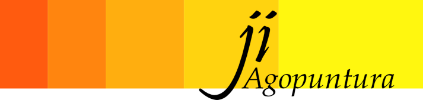

Shonishin
Shonishin è una forma dell'agopuntura per bambini praticata in Giappone da circa 250 anni. Shonishin è una parola che trae significato da due termini giapponesi: „Shoni“ (bambino) e „Shin“ (ago).
Al posto di utilizzare aghi per agopuntura, nel Shonishin viene utilizzato uno strumento particolare simile ad un chiodo mediante il quale si praticano tecniche accurate di pressione, percussione o accarezzamento sulla superficie di parti di meridiani, punti o altre zone particolarmente reattive. È un metodo gradevole e non invasivo che non incute timori, adatto anche ai più piccoli, ma non solo per loro. In modo delicato ed efficiente vengono trattati disturbi energetici che possono portare a sintomi, anomalie o malattie.
Shonishin, come anche l'agopuntura, ha un effetto regolativo sul sistema dei meridiani e sul sistema nervoso vegetativo. Questa forma dell'agopuntura pediatrica può essere praticata sia a scopo profilattico che terapeutico già su neonati, lattanti, e bimbi fino all'età pre-scolastica. Pure giovani e adulti particolarmente sensibili o con „paura da ago“ vengono trattati efficacemente con Shonishin.
Tra i tanti disturbi che si possono trattare vale la pena di citarne alcuni:
urla, grida, pianti continui;
disturbi della digestione quali coliche, coliche dei tre mesi, costipazione e diarrea;
disturbi dell'apparato motorio quali asimmetrie, „Sindrome KiSS“, iper/ipotonicità muscolare e contratture;
malattie respiratorie come raffreddamenti cronici, disturbi ad occhi, orecchie e bocca;
malattie della pelle e allergie quali lattime, neurodermite, pollinosi;
disturbi sensorici come iperattività, disturbi del sonno, del linguaggio o della parola.
© Julo Indemini